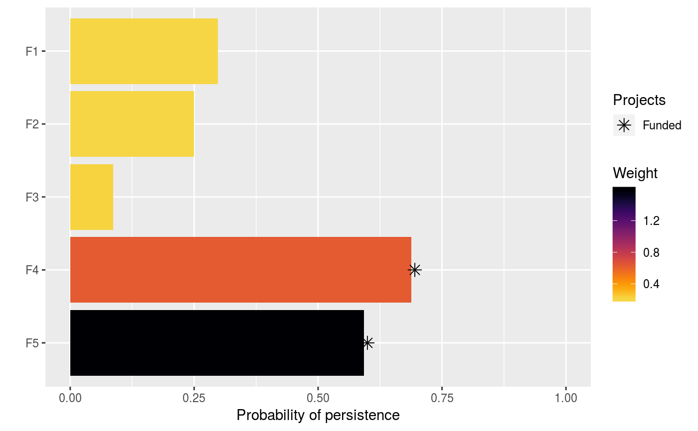

Weights are used to specify the relative importance for specific features persisting into the future. Please note that only some objectives require weights, and attempting to solve a problem that does not require weights will throw a warning and the weights will be ignored.
Currently, only one function can be used to specify weights:
add_feature_weights()Set feature weights for a project prioritization problem().
# load data data(sim_projects, sim_features, sim_actions) # build problem with maximum richness objective, $300 budget, and # feature weights p <- problem(sim_projects, sim_actions, sim_features, "name", "success", "name", "cost", "name") %>% add_max_richness_objective(budget = 200) %>% add_feature_weights("weight") %>% add_binary_decisions() # \dontrun{ # solve problem s <- solve(p)#> Gurobi Optimizer version 9.1.2 build v9.1.2rc0 (linux64) #> Thread count: 4 physical cores, 8 logical processors, using up to 1 threads #> Optimize a model with 47 rows, 47 columns and 102 nonzeros #> Model fingerprint: 0xffde171d #> Variable types: 0 continuous, 42 integer (42 binary) #> Semi-Variable types: 5 continuous, 0 integer #> Coefficient statistics: #> Matrix range [9e-02, 1e+02] #> Objective range [2e-01, 2e+00] #> Bounds range [1e+00, 1e+00] #> RHS range [1e+00, 2e+02] #> Found heuristic solution: objective 0.6654645 #> Presolve removed 16 rows and 12 columns #> Presolve time: 0.00s #> Presolved: 31 rows, 35 columns, 65 nonzeros #> Variable types: 0 continuous, 35 integer (35 binary) #> Presolved: 31 rows, 35 columns, 65 nonzeros #> #> #> Root relaxation: objective 1.511230e+00, 11 iterations, 0.00 seconds #> #> Nodes | Current Node | Objective Bounds | Work #> Expl Unexpl | Obj Depth IntInf | Incumbent BestBd Gap | It/Node Time #> #> * 0 0 0 1.5112297 1.51123 0.00% - 0s #> #> Explored 0 nodes (11 simplex iterations) in 0.00 seconds #> Thread count was 1 (of 8 available processors) #> #> Solution count 1: 1.51123 #> #> Optimal solution found (tolerance 0.00e+00) #> Best objective 1.511229665304e+00, best bound 1.511229665304e+00, gap 0.0000%#> # A tibble: 1 x 21 #> solution status obj cost F1_action F2_action F3_action F4_action F5_action #> <int> <chr> <dbl> <dbl> <dbl> <dbl> <dbl> <dbl> <dbl> #> 1 1 OPTIMAL 1.51 199. 0 0 0 1 1 #> # … with 12 more variables: baseline_action <dbl>, F1_project <dbl>, #> # F2_project <dbl>, F3_project <dbl>, F4_project <dbl>, F5_project <dbl>, #> # baseline_project <dbl>, F1 <dbl>, F2 <dbl>, F3 <dbl>, F4 <dbl>, F5 <dbl># }